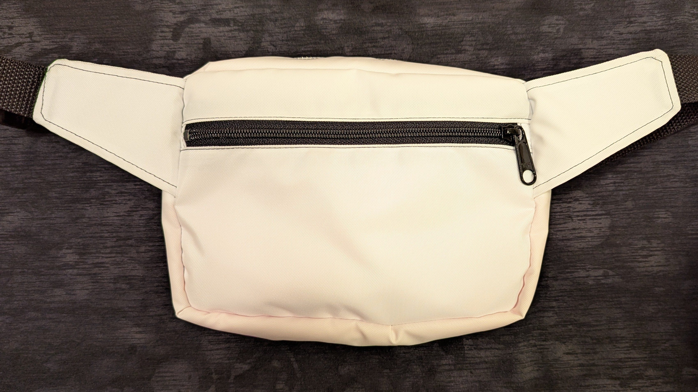
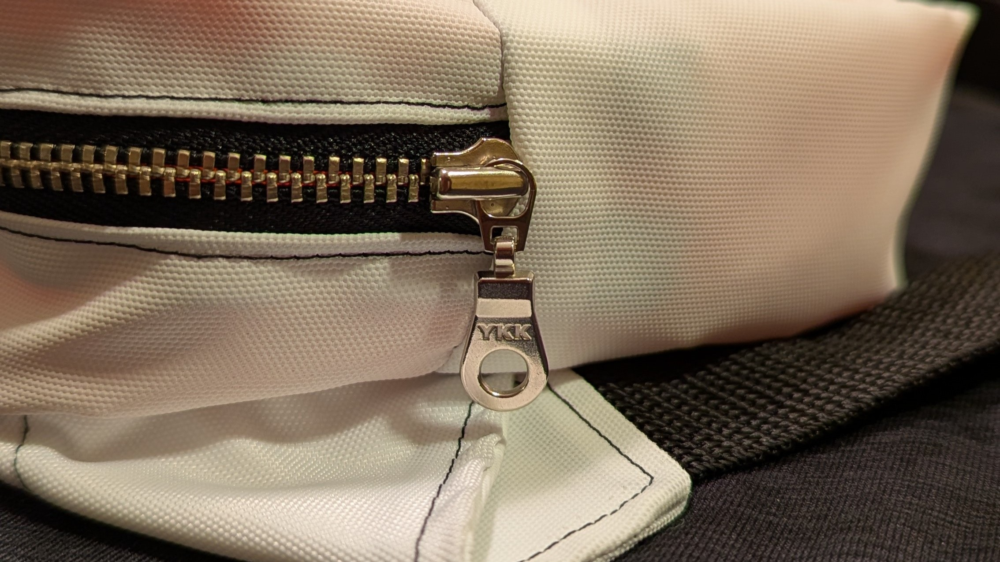
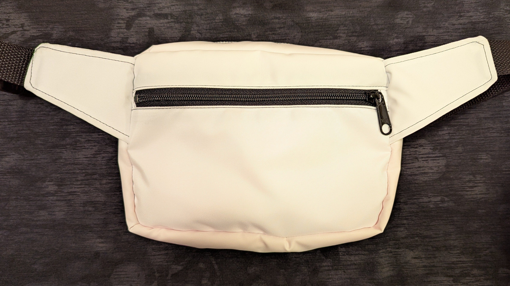
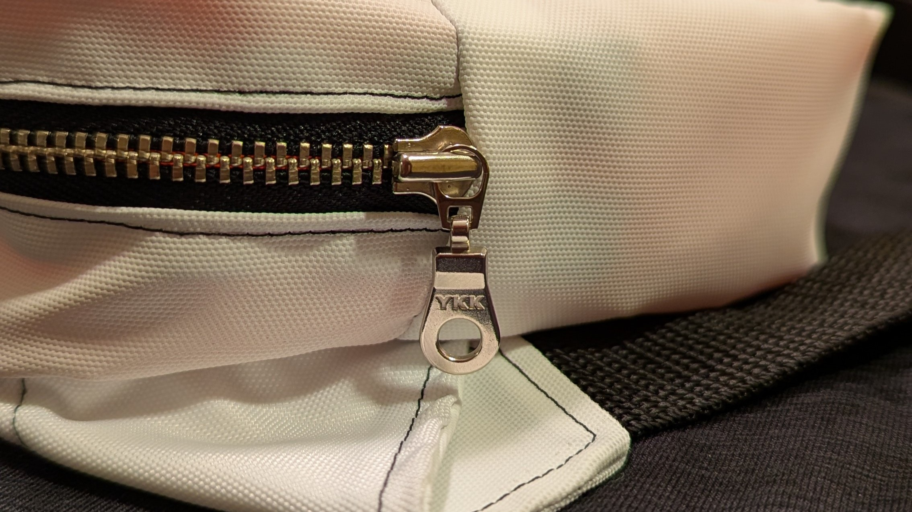

"Surprise" Fanny Pack

I created this nylon fanny pack/crossbody bag to practice zippers, serging, and working with slick materials. The outside and back pocket are white with black accents and stitching. Upon opening the main compartment, you're greeted with a bright neon orange lining, interior pocket, and cleanly serged edges. The orange interior was inspired by Christian Louboutin "red bottoms" and the idea of hidden luxury. It also doubles as a practical solution for seeing contents in a dark environment!
Gallery
 


